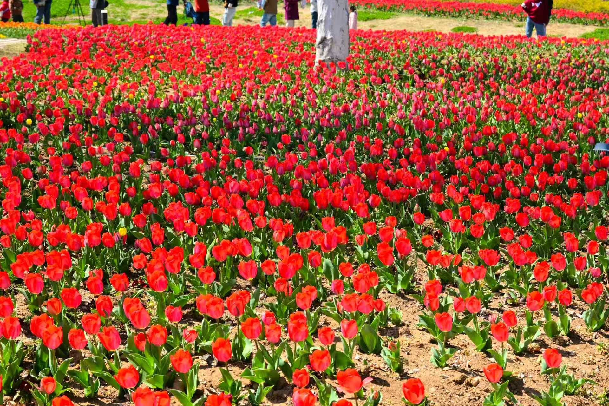

春日的校园是一幅被大自然精心调色的油画，每一寸土地都洋溢着蓬勃的生机。清晨，阳光透过层层叠叠的香樟叶，在林荫道上洒下斑驳的光影，微风拂过，树叶沙沙作响，夹杂着花草的清香，扑面而来。校园中央的人工湖是整个校园的点睛之笔，湖水清澈见底，倒映着岸边的垂柳和远处的教学楼，偶尔有几尾锦鲤摆尾游过，漾开一圈圈涟漪，打破了湖面的宁静。湖边的樱花树在春日里竞相绽放，粉白的花瓣随风飘落，铺成一条浪漫的花径，路过的师生总会忍不住停下脚步，沉醉在这唯美的春日景致里。
沿着湖边的石板路漫步，两侧的草坪如绿色的绒毯般铺展，不知名的野花点缀其间，黄的、紫的、白的，星星点点，煞是好看。远处的小山坡上，草木郁郁葱葱，几株松柏挺拔直立，守护着校园的静谧。春日的校园，空气里满是湿润的泥土气息和花草的芬芳，抬头是澄澈的蓝天，低头是鲜活的绿意，每一次呼吸都能感受到大自然赋予校园的独特魅力，让人忍不住心生欢喜，只想沉浸在这春日校园的美好里，不愿离去。
校园的人文景观是历史底蕴与青春活力的交融，每一处建筑、每一座雕塑都承载着独特的文化内涵。校门口的校训石是校园的标志性景观之一，灰褐色的石材上刻着遒劲有力的校训，字体苍劲有力，熠熠生辉，时刻提醒着每一位学子铭记初心，砥砺前行。校训石周围环绕着四季常青的冬青，修剪整齐的造型与校训石相得益彰，彰显着校园严谨踏实的治学氛围。
校园内的名人雕塑群同样是人文景观的重要组成部分，钱学森、华罗庚、居里夫人等中外科学巨匠与文学泰斗的雕塑错落分布在教学楼之间的广场上。他们或手持书卷沉思，或昂首远眺立志，栩栩如生的造型不仅为校园增添了浓厚的文化气息，更激励着学子们以先贤为榜样，追求真理，探索未知。此外，校园内的复古式图书馆更是人文景观的典范，红砖白墙的建筑风格典雅大气，内部藏书丰富，木质的书架、明亮的落地窗，处处透着书香气息，成为师生们静心求学、汲取知识的圣地，让每一个身处其中的人都能感受到文化的力量。
